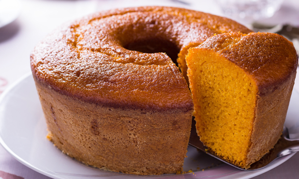

Atividade 1
Parágrafo 1
Parágrafo 2
Parágrafo 3
Parágrafo 4
Parágrafo 5
Parágrafo 6
Atividade 2
Atividade 3
BOLO DE CENOURA

INGREDIENTES
- 1/2 xícara (chá) de óleo
- 3 cenouras médias raladas
- 4 ovos
- 2 xícaras (chá) de açúcar
- 2 e 1/2 xícaras (chá) de farinha de trigo
- 1 colher (sopa) de fermento em pó
Leite
MODO DE PREPARO MASSA
- 1- Em um liquidificador, adicione a cenoura, os ovos e o óleo, depois misture.
- 2- Acrescente o açúcar e bata novamente por 5 minutos.
- 3- Em uma tigela ou na batedeira, adicione a farinha de trigo e depois misture novamente.
- 4- Acrescente o fermento e misture lentamente com uma colher.
- 5- Asse em um forno preaquecido a 180° C por aproximadamente 40 minutos.
COBERTURA
- 1 colher (sopa) de manteiga
- 3 colheres (sopa) de chocolate em pó
- 1 xícara (chá) de açúcar
- 1 xícara (chá) de leite
MODO DE PREPARO COBERTURA
- 1- Despeje em uma tigela a manteiga, o chocolate em pó, o açúcar e o leite, depois misture.
- 2- Leve a mistura ao fogo e continue misturando até obter uma consistência cremosa, depois despeje a calda por cima do bolo.